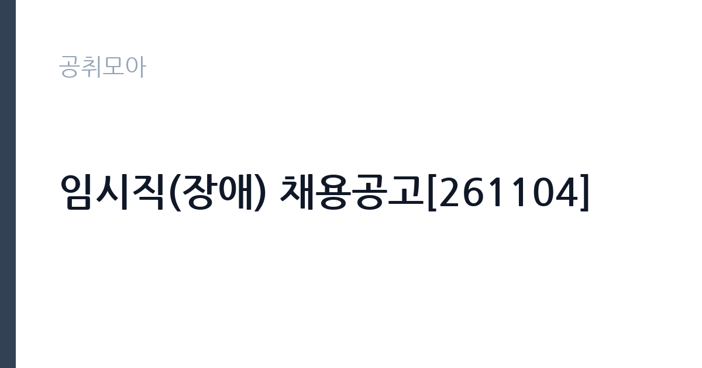

[공공기관] 임시직(장애) 채용공고[261104]
국립암센터 · 경기 · 마감 2026-11-20 (D-16) · 출처 잡알리오

한눈에 보는 모집 조건
| 기관 | 국립암센터 |
|---|---|
| 공고명 | 임시직(장애) 채용공고[261104] |
| 고용형태 | 기간제 |
| 근무지 | 경기 |
| 게시일 | 2026-11-04 |
| 마감일 | 2026-11-20 (D-16) |
지원자격, 이렇게 읽으세요
- 최종합격자 발표 이후 임용예정일부터 근무 가능한 자
기간제 근로자는 근로계약 기간이 정해진 신분입니다. 계약 기간과 갱신 가능 여부가 근로계약서에 명시되며 기간 만료 시 근로관계가 종료됩니다. 결원 보충이나 특정 사업 기간에 맞춰 채용되는 경우가 많아 업무 범위가 명확합니다. 이번 공고는 국립암센터가 직접 진행하는 자체 전형입니다. 공통자격은 병역을 마쳤거나 면제된 사람, 센터 인사규정상 임용 결격사유가 없는 사람, 최종합격자 발표 이후 임용예정일부터 근무가 가능한 사람입니다. 장애인 전형으로 공고되어 있으므로 장애인 등록 증명 등 자격을 입증하는 서류가 필요합니다. 직무별 세부 요건과 모집 인원은 채용 사이트의 분야별 공고문에 따로 제시되어 있습니다. 임시직은 계약 기간이 정해진 신분이므로 근무 시작일과 종료일을 먼저 확인하십시오. 응시 자격 판단이 애매하면 접수 전에 채용 담당 부서로 문의하는 편이 안전합니다. 자격증은 유효 기간과 등록 상태를 확인해야 합니다. 갱신이 필요한 자격이라면 갱신 여부를 먼저 점검하십시오. 자격 취득 예정자는 채용 공고의 예정자 허용 조항을 먼저 확인해야 합니다. 조항이 없으면 지원 자체가 반려될 수 있습니다.
이 공고의 포인트
이 건은 국립암센터가 같은 시기에 낸 2개 모집분야 가운데 임시직 업무지원(장애인 전형) 직무입니다. 다른 직무 공고와 요건이 다르므로 지원 전에 모집분야 표를 대조해야 합니다. 이 공고의 첫 번째 포인트는 고용 형태입니다. 계약 기간이 정해져 있어 근무 종료 시점이 명확합니다. 그만큼 짧은 기간에 어떤 실적을 남길지가 중요해집니다. 두 번째는 업무 범위가 명확하다는 점입니다. 임시직 업무지원(장애인 전형) 직무로 채용되므로 배치 이후 담당 업무가 크게 흔들리지 않습니다. 세 번째는 근무지입니다. 경기 지역 근무로 접근성은 좋지만 그만큼 지원자가 몰리는 지역이므로 경쟁률을 넉넉히 잡아야 합니다. 모집 인원이 적은 만큼 지원자 한 명 한 명의 서류 완성도가 당락에 크게 작용합니다. 선발 인원은 공고문에 명시되어 있으니 모집분야 항목을 함께 확인하십시오.
전형은 어떻게 진행되나
서류전형과 면접전형 외에 직무수행능력 평가가 붙는 경우가 있습니다. 평가 방식은 공고문에 구체적으로 적혀 있으므로 어떤 항목에 배점이 높은지 먼저 파악하십시오. 면접에서는 지원 동기보다 실제 업무 경험에 대한 질문이 많고, 답변의 구체성이 평가를 가릅니다. 전형 일정은 서류 마감 이후 빠르게 진행되므로 연락 가능한 번호를 정확히 기재하고 문자와 메일을 수시로 확인해야 합니다. 최종 단계에서는 결격사유 조회와 신체검사가 진행됩니다. 면접조 편성과 대기 시간이 공지되므로 당일 도착 시간을 여유 있게 잡으십시오.
원문에서 확인한 전형 방식
<공통자격> - 병역을 마쳤거나 면제된 자 - 국립암센터 인사규정에 따른 임용 결격사유에 해당하지 않는 자 - 최종합격자 발표 이후 임용예정일부터 근무 가능한 자 - 암발생 및 사망률을 감소시키고 암 환자들의 삶의 질을 높이고자 하는 국립암센터 설립목적 수행에 적극 동참하고자 하는 자
이런 분께 추천해요
- 장애인 전형 자격을 갖춘 분
- 병원·연구기관 근무 또는 지원 경험이 있는 분
- 임용예정일부터 근무가 가능한 분
지원 전 체크리스트
- 응시자격 요건과 경력 기준을 충족하는가 — 경력은 증명서로 입증해야 합니다
- 계약 기간과 근무 시작일·종료일을 확인했는가
- 제출서류 목록을 모두 준비했는가 — 누락 시 서류 단계에서 탈락합니다
- 접수 마감 2026-11-20 이전에 접수 방식을 확인해 제출했는가
모집 일정과 제출 타이밍
2026-11-04에 공고가 올라왔고 접수는 2026-11-20까지입니다. 남은 기간은 16일이며, 이 기간에 자격증 사본과 경력증명서, 주민등록등본 같은 기본 서류를 모두 준비해야 합니다. 경력증명서는 발급에 며칠이 걸리는 경우가 있으니 가장 먼저 신청하십시오. 접수는 온라인과 우편·방문으로 나뉘는 경우가 많고, 우편 접수는 도착 기준으로 판정되므로 마감일 소인만 믿으면 안 됩니다. 면접 일정은 서류 발표 후 개별 통보되므로 제출 후에도 연락을 받을 수 있도록 유지해야 합니다. 접수 첫날에 몰리면 시스템 접속이 지연될 수 있으므로 오전 시간대 제출이 안전합니다.
직무 이해하기: 공공기관
국립암센터는 암 연구와 진료를 함께 수행하는 보건복지부 산하 기관입니다. 이 공고는 장애인을 대상으로 하는 임시직 채용으로, 배치 부서의 진료 지원이나 연구·행정 보조 업무를 맡습니다. 진료 지원은 외래·병동의 환자 안내와 이동 지원, 검사 일정 안내가 중심이고, 연구·행정 지원은 과제 자료 정리와 데이터 입력, 회의 준비가 붙습니다. 임시직은 계약 기간이 정해진 신분이라 근무 기간과 배치 부서를 함께 확인해야 합니다. 장애인 편의 지원과 근무 환경 조정은 채용 담당 부서와 사전에 협의할 수 있습니다. 업무 매뉴얼과 지침이 문서로 정리되어 있어 절차를 익히면 반복 업무는 빠르게 손에 붙습니다.
자기소개서 작성 팁
지원서는 지원 분야와 본인이 할 수 있는 업무 범위를 분명히 쓰는 것이 중요합니다. 병원이나 연구기관에서 근무한 경험이 있다면 부서와 담당 업무를 구체적으로 밝히십시오. 암센터의 설립 목적과 주요 사업을 한 문단으로 정리하면 준비도가 드러납니다. 계약 기간 동안 업무 공백을 만들지 않겠다는 의지를 분명히 밝히십시오. 직무 경험이 많지 않다면 경험의 양보다 과정을 구체적으로 쓰는 편이 낫습니다. 어떤 상황에서 무엇을 판단했고 어떤 결과가 나왔는지 순서대로 서술하면 신뢰가 생깁니다. 지원 동기와 기여 방안은 한 문단씩 짧게 유지하고, 가장 자신 있는 경험에 분량을 몰아주십시오. 마지막 문장은 포부보다 구체적인 실행 계획으로 끝내는 것이 좋습니다.
면접 준비 포인트
면접에서는 배치 부서 업무에 대한 이해와 응대 태도를 확인합니다. 환자나 보호자를 대면하는 자리라면 민원 대응 방식과 개인정보·의료정보 취급 태도를 묻습니다. 연구·행정 지원 자리라면 문서 작성과 데이터 정리 경험을 구체적으로 답하십시오. 필요한 근무 환경 조정이 있다면 면접 단계에서 밝히는 편이 서로에게 정확합니다. 마지막 질문 시간에는 근무 조건에 대한 확인 사항을 한 가지 정도 준비해 가면 성실성이 드러납니다. 모르는 질문에 추측으로 답하면 감점 요인이 되므로, 확인 후 답하겠다고 밝히는 편이 안전합니다.
급여·근무조건 읽는 법
국립암센터는 알리오 2025년 결산 공시 기준 일반정규직 1인당 평균보수 8,242만원, 공시된 신입사원 초임 4,324만원입니다. 다만 이번 공고는 임시직이라 위 정규직 공시값이 그대로 적용되지 않고, 센터의 임시직 임금 기준과 계약 기간에 따라 보수가 정해집니다. 월 급여와 계약 개월 수를 곱한 총액으로 비교하십시오. 2026년 적용 최저임금은 시급 10,320원, 월 환산 2,156,880원(주 40시간·209시간 기준)입니다. 고용노동부 고시 제2025-47호로 확정된 금액입니다. 공고문에 금액이 제시되지 않은 항목은 원문 보수표나 처우 설명에서 확인해야 하며 확인되지 않은 수치는 쓰지 않는 것이 원칙입니다. 비교할 때는 월 급여뿐 아니라 상여·명절휴가비·복지포인트·초과근무수당까지 포함한 연간 총액으로 계산하십시오. 기간제라면 계약 기간 동안의 총액을, 무기계약이라면 호봉 상승과 정년까지의 누적 소득을 기준으로 판단하는 편이 정확합니다.
자주 묻는 질문
- 선발 인원은 몇 명인가요?
공고문의 모집분야 항목에 직종별 인원이 표로 제시되어 있습니다. 첨부된 공고문 원문에서 확인하십시오. - 근무지는 어디인가요?
경기 지역의 국립암센터 소속 근무지입니다. 세부 주소와 출퇴근 조건은 원문 공고문에서 확인할 수 있습니다. - 보수는 얼마인가요?
채용 신분(기간제)과 기관 임금 규정에 따라 정해지며 구체적인 금액은 공고문 처우 항목에 제시됩니다. 금액이 공개되지 않은 경우에는 원문의 보수표를 확인하십시오.
함께 보면 좋은 공고
[공공기관] 한국농어촌공사 영산강사업단 공무직(청소원) 보훈 장애 제한경쟁 채용공고 — 마감 2026-11-20[공공기관] 2027년 1차 박사후연수연구원, 석사후연수연구원 및 위촉연구원 공개채용 — 마감 2026-11-20[공공기관] 서울대학교치과병원 2027년 상반기 정규직(원무직) 채용 공고 — 마감 2026-11-18출처: 잡알리오 공개정보를 바탕으로 공취모아가 정리한 안내글입니다. 모집 조건·일정은 변경될 수 있으니 지원 전 반드시 원문 공고문을 확인하세요. 본 글은 정보 제공용이며 합격을 보장하지 않습니다.